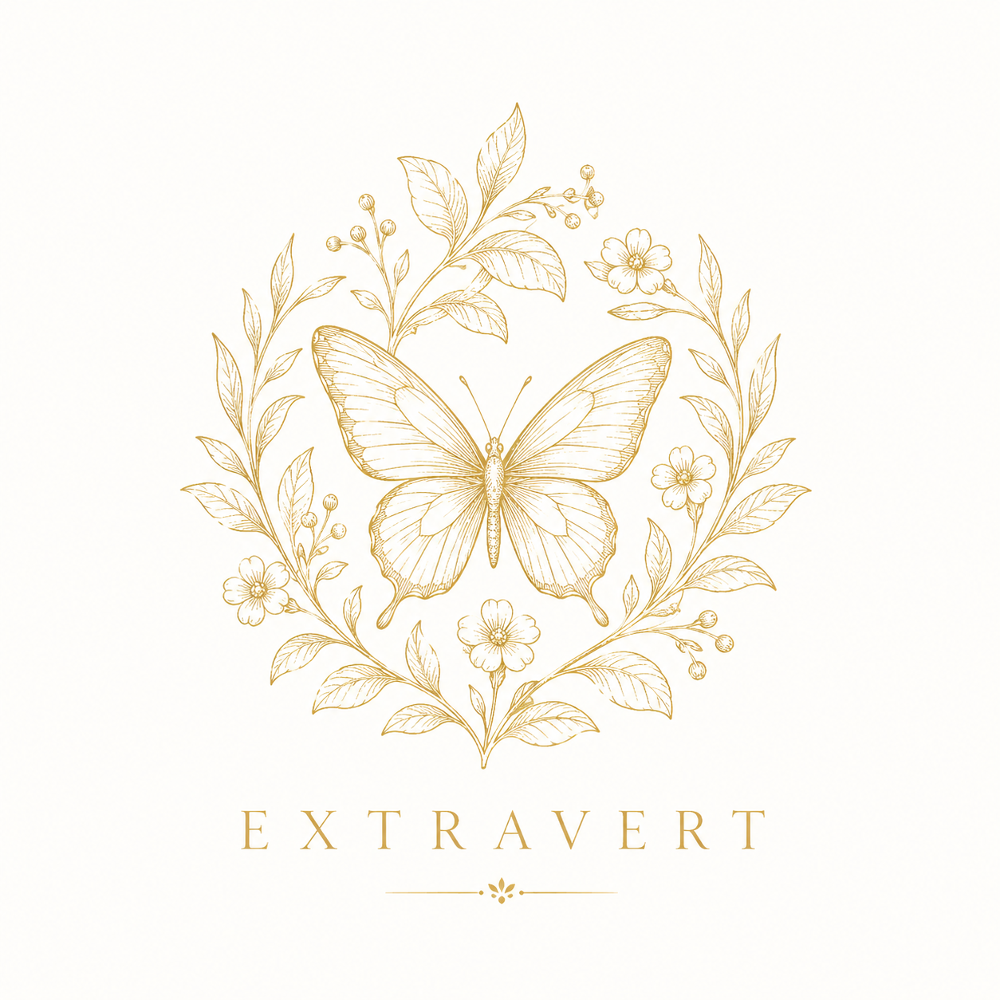

Every stranger is a friend you haven't met yet.
First in the room — and first in everyone's hearts.
Team Extravert arrived early, already know everyone's name, and have somehow been invited to at least two after-parties. These are the connectors — the people who fill a room, start conversations, and keep the energy alive long after midnight. Tonight is their natural habitat.
"You can make more friends in two months by being genuinely interested in others than in two years of trying to get others interested in you."
— Dale Carnegie
Collect at least one new contact from outside your table before the night ends — and make it a genuine one.